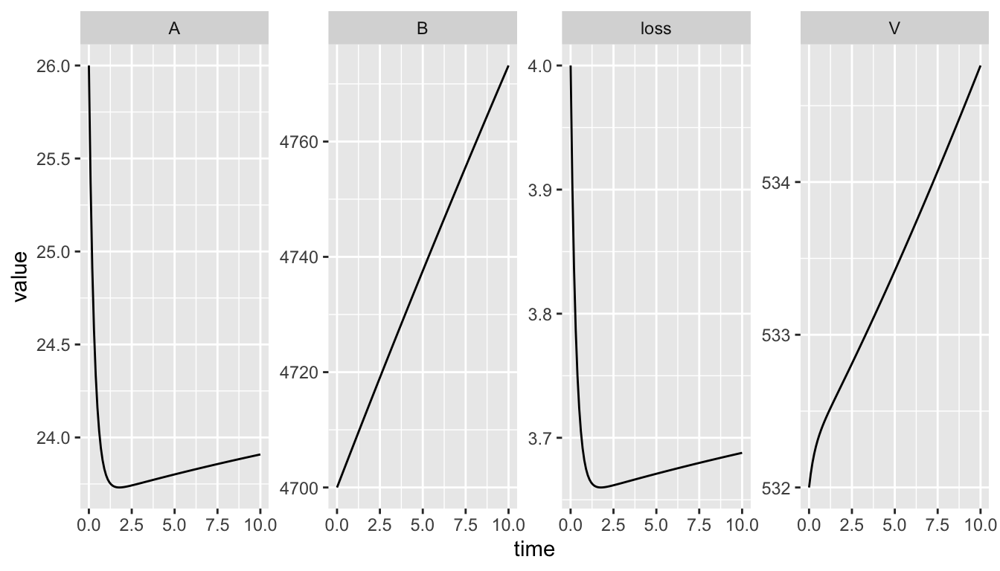

8 Optimization
8.1 Introduction
Sometimes we want to find values of parameters by picking those that cause the model output to match observed data as closely as possible. We call this optimization or calibration. Usually calibration refers to the entire modeling process, whereas optimization refers to the computational techniques used to make the model-data match as close as possible.
We will take a couple of different approaches to optimization, starting with one parameter at a time, and moving to optimizing two or more parameters simultaneously. We will use our Bormann model with self-limiting vegetation.
8.2 Bormann logistic model
Code to run the ODE model. First we load the model (source). If you want to view it in the console, you can do that.
rm( list = ls() ) # clean the workspace.
library(deSolve)
# The next line of code loads and runs a file. It requires that this script
# is in R's working directory.
# Alternatively, you could include the entire path in the file name.
# getwd() # will tell you what the working directory is.
source("code/BormannLogistic.R")
## bormann.logisticNext we begin to run it.
##
p <- c( a20 = 6.5, a30 = 14.2, a12 = 79.6/(532*26), a21 = (6.6 + 0.8)/532,
a31 = (54.2 + 2.7 + 6.2 + 0.1)/532,
a23 = 69.6/4700, a02 = 3.9/26, a03 = 0.1/4700,
K = 600)
y <- c(V = 532, A = 26, B = 4700)
t <- seq(from = 0, to = 500, by = 1)
out <- ode(y = y, times = t, func = bormann.logistic, parms = p)
plot( out )Figure 8.1: Our model’s output. Refer to an earlier chapter for the meanings and units of the parameters and state variables.
8.3 Fitting a model to data
Fitting a model to data can mean a variety of things, but maybe most generally we mean that we adjust parameters until the differences between the model output and our data are as small as possible. There are many analytical and computational techniques to do this.
In R, it is often best to use optimize() for 1-dimensional optimization, that is, when our goal is to adjust or optimization a single parameter while holding all others constant. There is a function optim() that is better when we want to optimize for more than one parameter.
We want to minimize deviations between our model output and observed state variables. We have options:
- Do we compare trajectories, or just end points?
- Do we minimize deviations between all state variables and the data, or just those we are confident about?
- Do we keep the deviations so that they are on the original scale of the data, such that large pools carry more weight than small pools? Alternatively, we could scale them to give them more equal weight.
In our case, we do not have trajectories of data through time - we have only a snapshot of the state of the ecosystem, so we cannot compare trajectories, only endpoints of model output vs. a snapshot of data.
Let’s start by using all the state variables, on the scale of the raw data.
We also need to choose a parameter to optimize. We might as well select one that is associated with high sensitivity, such as mineralization rate, \(a_23\).
8.3.1 Minimization is the new black
In most optimization procedures, we create an objective function that measures deviation between a model and data and then uses one or another procedure to try different values and find those that minimization the deviations.
Here is our example of an objective function that searches for values of a23 (mineralization rate) that minimize deviations between the model output (values of \(V\), \(A\), \(B\) at \(t = 500\)) and the data on pool size, provided by Bormann et al. (1977).
sse.bormann.mineralization <- function(params, data) {
## an objective function whose arguments are
## params - the parameter of interest
## data - data from Bormannm et al.
## Assign a new value of the parameter to our set of parameters
p['a23'] <- params
## run the model
out <- ode(y = y, times = t, func = bormann.logistic, parms = p)
## store the last values of the state variables
nr <- nrow(out)
model.output <- out[nr,c("V", "A", "B")]
## Calculate the sum of the squared differences
## squaring the differences makes them positives and
## weights big differences even more heavily
diffs <- model.output - data
diffs2 <- diffs^2
sse <- sum( diffs2 )
## Return the SSE
sse
}Next, we use our objective function with optimize() to find the value of a23 that minimizes the objective function. First, we’ll define the data to which we compare the model. We need to use the same name that we used in the objective function.
data = c(V = 532, A=26, B=4700)Next, we use optimize, where
fis the objective functionintervalis a two-element vector with the lower and upper limits of parameter.paramsis an argument of our objective function, with which we telloptimizethe value at which to start the search.
fit0 <- optimize(f = sse.bormann.mineralization, interval = c(0.01, 0.5), data=data)Now let’s examine the result of the optimization.
fit0## $minimum
## [1] 0.018149
##
## $objective
## [1] 4625.243The minimum is the value of the parameter for which the minimum was reached. The objective is the value of the objective function, which was minimized by the parameter value minimum. (The value of mineralzation rate that we started with was \(a_{23} = 69.6/4700 =\) 0.015).
Now let’s rerun the model with the optimized value, and look at the output. We first create a new parameter vector, and insert the optimized mineralization rate.
p.opt <- p
p.opt['a23'] <- fit0$minimumNow we can rerun the ODE model with the original and the optimized values of the mineralization rate.
out.original <- as.data.frame( ode(y = y, times = 0:500, func = bormann.logistic, parms = p))
out.opt <- as.data.frame( ode(y = y, times = 0:500, func = bormann.logistic, parms = p.opt))When we plot both sets of ouput and the data, we see the differences among all three.
layout(matrix(1:4, nrow=2) )
plot(out.original$time, out.original$V, type="l")
lines(out.opt[,1], out.opt[,2], lty=2, lwd=1, col=2)
abline(h=data['V'], lty=3, lwd=1, col=4)
plot(out.original$time, out.original$A, type="l", ylim = c(23,33))
lines(out.opt[,1], out.opt[,3], lty=2, lwd=1, col=2)
abline(h=data['A'], lty=3, lwd=1, col=4)
plot(out.original$time, out.original$B, type="l", ylim=c(1000, 6000))
lines(out.opt[,1], out.opt[,4], lty=2, lwd=1, col=2)
abline(h=data['B'], lty=3, lwd=1, col=4)
If we return to our choices described above, we might consider several things. First, we might think that we have relatively accurate and precise estimates of the vegetation and available pools, but poor estimates of the bound pool. Therefore, we might want to fit the model to just the vegetation and available pools. However, given that the system is all connected, we may not want to take such drastic action.
Alternatively, we might want to at least weight the pools more equally by using the log-transformations of the output and data. This accomplishes two things. First, it weights the variables on a more similar scale. This may not matter for the result with some methods of optimization, but it can. Second, it makes the computation more stable and reliable to use both smaller numbers, and each on a more similar scale. This can make a big difference if you are having trouble getting the optimization to give reliable, repeatable results. Let’s try this option, and see if it makes a difference. We start by rewriting our objective function comparing the base 10 logs of the output and the data. The only difference is that diffs <- model.output - data becomes diffs <- log(model.output, 10) - log(data, 10).
sse.bormann.mineralization2 <- function(params, data) {
## an objective function whose arguments are
## params - the parameter of interest
## data - data from Bormannm et al.
## Assign a new value of the parameter to our set of parameters
p['a23'] <- params[1]
## run the model
out <- ode(y = y, times = t, func = bormann.logistic, parms = p)
## store the last values of the state variables
nr <- nrow(out)
model.output <- out[nr,c("V", "A", "B")]
## Calculate the sum of the squared differences
## squaring the differences makes them positives and
## weights big differences even more heavily
diffs <- log(model.output, 10) - log(data, 10)
diffs2 <- diffs^2
sse <- sum( diffs2 )
## Return the SSE
sse
}Now we rerun the optimization and examine the output.
fit0.log <- optimize(f = sse.bormann.mineralization2,
interval = c(0.001, 0.1), data=data)
fit0.log## $minimum
## [1] 0.0181761
##
## $objective
## [1] 0.002796935fit0## $minimum
## [1] 0.018149
##
## $objective
## [1] 4625.243Notice that the objective function output is much, much smaller. This is because the logarithms of the raw data (especially the bound pool) are much, much smaller. Second, we see tha \(a_{23}\) is only very slightly different than our other fitted value. Nonetheless, we will rerun the model again, using this new value.
p.opt.log <- p
p.opt.log['a23'] <- fit0.log$minimum
out.opt.log <- as.data.frame( ode(y = y, times = 0:500, func = bormann.logistic, parms = p.opt.log))Now we can compare all of our information, including the raw data, our original model output using parameters estimated from Bormann et al. (1977), and parameters fitted using either the raw or transformed data.
rbind(data=data, Bormann = out[501, 2:4], raw=out.opt[501,2:4], log=out.opt.log[501,2:4])## V A B
## data 532.0000 26.00000 4700.000
## Bormann 599.7254 25.46203 5753.202
## raw 599.9441 25.49684 4702.931
## log 599.9447 25.49695 4695.946We see that the model calibrated with either the raw or transformed data is able to generate output more consistent with the current size of the bound pool. What does that mean? It gives us a new hypothesis about mineralization rate, and allows us to ask whether the bound pool is growing, whether our estimate of mineralization was too low, or something else. Nonetheless, we can now begin to ask more sophisticated questions of our system.
8.3.2 Your assignment, should you choose to accept it.
- Identify another parameter that would be useful to examine.
- Justify your choice.
- identify line of code you would need to edit in
sse.bormann.mineralization2(), and propose the necessary change.
- Vegetation
- Propose a hypothesis for why the final size of the vegetation pool seems unaffected by changes in mineralization rate.
- What about the pool might vary with mineralization rate, and why? Describe a way to test your idea.
8.4 Two (or more) parameters at a time
Here we use the same approach, in which we have an objective function, parameters of interest, and data. Yeah, baby!
Here is our objective function, and you can see it is not very different. Find and explain the difference.
sse.b.m.p2 <- function(params, data, vars) {
## an objective function whose arguments are
## params - the parameter of interest
## data - data from Bormannm et al.
## Assign a new value of the parameter to our set of parameters
p['a23'] <- params[1]
p['a31'] <- params[2]
## run the model
out <- ode(y = y, times = t, func = bormann.logistic, parms = p)
## store the last values of the state variables
nr <- nrow(out)
model.output <- out[nr,c("V", "A", "B")]
## Calculate the sum of the squared differences
## squaring the differences makes them positives and
## weights big differences even more heavily
diffs <- log(model.output, 10) - log(data, 10)
diffs2 <- diffs^2
wdiffs2 <- diffs2/vars
sse <- sum( wdiffs2 )
## Return the SSE
sse
}Now things start to get a tiny bit different. We need a vector of parameters. What are these biological processes?
params <- c(a32 = 69.6/4700, a31 = 0.19)Now we use optim(). Unlike the 1-D optimze(), the first argument is the vector of parameters. The second argument is the function, and last we tell optim() what other stuff we need (in this case the data).
vars <- c(532/10, 26/10, 4700*2)
fit2 <- optim(par = params, fn = sse.b.m.p2, data=data, vars=vars)When we look at the values returned, we get a little more information than we do from optimize (see ?optim). That is because optim() can use a variety of optimization algorithms, and a wide variety of control functions (see ?optim for more information).
fit2## $par
## a32 a31
## 0.01823085 0.12182485
##
## $value
## [1] 5.120701e-05
##
## $counts
## function gradient
## 65 NA
##
## $convergence
## [1] 0
##
## $message
## NULLThe value par is, of course, the best set of parameters, and value is the value of the objective function. Convergence is just a code, and 0 indicates successful completion.
Have at it. What can you learn today? What to we most want to know? Can we use the model to make hypotheses about processes that are not even in the model, like dentrification?